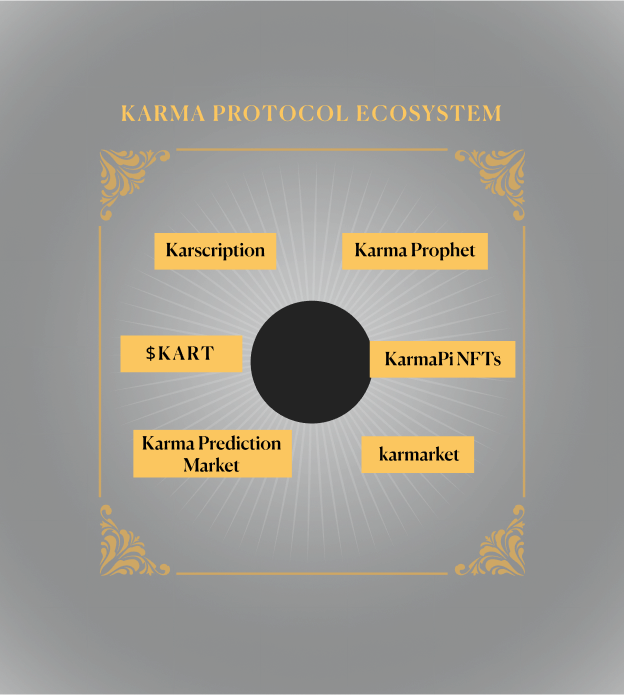

{{define "section-2"}}

<div id="token" class="space-top-3 position-relative bg-dark overflow-hidden bg-section-3">
    <div class="container-xl container-fluid space-md-2 px-0 px-md-12 px-lg-12">
  
   <div class="row justify-content-lg-between align-items-md-center karma-star"> 
      <div class="col-lg-6 mb-3 mb-lg-0 order-md-0 order-2">
        <div class="mb-3">
          <div class="group-1261153018-EHC">
            <p class="karma-protocol">Karma Protocol leverages $SUI, $MOVE, and $KART for enhanced asset support and growth. We enable the community to initiate prediction events and utilize smart inscriptions as tools for engagement, foster a community-driven ecosystem growth and interaction.</p>
            <p class="karma-protocol">KarmaPi aims to broaden the ecosystem partnerships, fulfilling a vision of comprehensive fully on-chain ecosystem interaction. From a community-driven development of prediction market, aiming to build a mutually beneficial community across the entire blockchain.</p>
          </div>
        </div>
        
      </div>
  
      <div class="col-lg-6 mb-3 mb-lg-0 order-md-0 order-1">
        <div class="position-relative">
          
          <!-- End SVG Elements -->
        </div>
      </div>
    </div>
  </div> 
      </div>

{{end}}